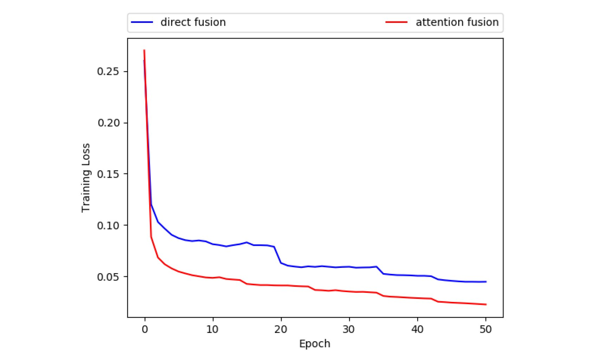
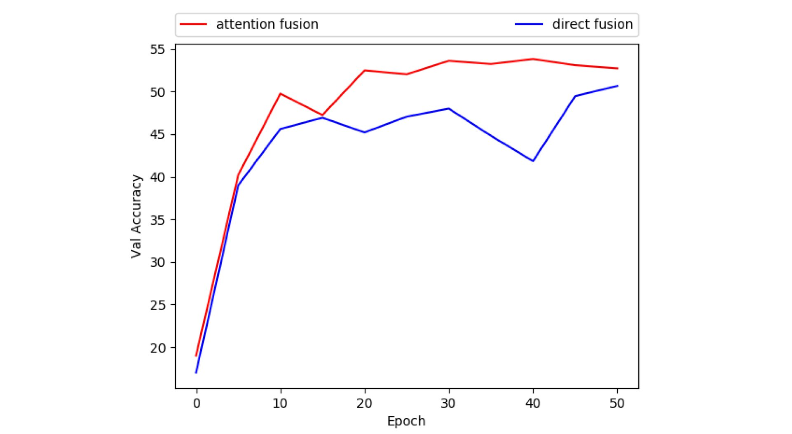

Experiments
The system is implemented by us in Pytorch.
In the experiments, Visual Question Answering is formulated as a 1000 class classification problem. We will train the classifier using the training 60,000 questions and answers. In testing, we use the 30,000 validation questions for testing. The classification accuracy is used as the evaluation metric.
Data preprocess
We first process the training labels. For the 60,000 training questions and its answers, we select the top 1000 common answers as answer labels. Therefore, we assign the corresponding answer label(i.e. 0-999) to the answers if the answers are in the answer list. Otherwise, that answer will not be used in training. We use the training samples with answer label 0-999 to train the network. Each image is scaled to be image of size 224*224. The RGB image pixel values are normalized to be [0-1]. Then each RGB image are normalized by mean=[0.485, 0.456, 0.406] and std [0.229, 0.224, 0.225].
Implementation Details
We use the pytorch function torchvision.models.vgg16 to extract the image features. Given one image of size 224*224, the output is feature map of size 512*7*7. We use the pytorch function torch.nn.Embedding to extract the word embedding with embedding size 300. Then we implemented a LSTM based question model to extract the question representation. In attention fusion, the question representation is of size 1024. The question representation and image features are fused to be a vector of size 1024. In direct fusion, we use spatial mean pooling to pool the image features to be feature vector of size 512. In order to keep the classification network with the same complexity, the question representation is extracted with size 512. The image features and question representation are concatenated directly to be a vector of size 1024, then it is forwarded to the classifier.
The network is trained end to end. The VGG network is pretrained from Imagenet pretrain model. The LSTM and fully connected layers are randomly initialized. All network parameters are tuned in the end to end fashion. The network is trained with SGD optimization. The initial learning rate is 0.1 and the learning rate will decay with rate 0.1 after each 15 epoch. The network is trained for 50 epochs.
Results
Following is the training curves for direct fusion and attention fusion.
From the training curves, it is easy to see that attention fusion works better than direct fusion in the training process. This indicates that model with attention fusion fits the training data better than direct fusion. This illustrates the effectiveness of the attention fusion in the training process.
Following is the validation results.
We test the model on the validation set after each 5 epoch. The curves illustrates that model with attention fusion always outperforms the model with direct fusion by a obvious gap. After 50 epochs, the attention fusion obtains 53.8% while direct fusion obtains 50.67%. In direct fusion, the whole image features are used for the answer prediction. However, the answer prediction usually is only relevant to a region of the image. Therefore, if we use the whole image features, there could be much redundant features there which will have negative effects on the overall performance. The attention fusion tends to focus on the image features which are informative for the answer prediction. Therefore, the attention fusion will suppress the redundant features and highlight the relevant features. This is the reason why attention fusion works better than direct fusion.